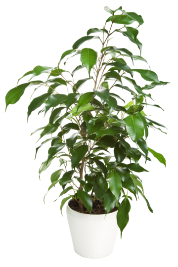
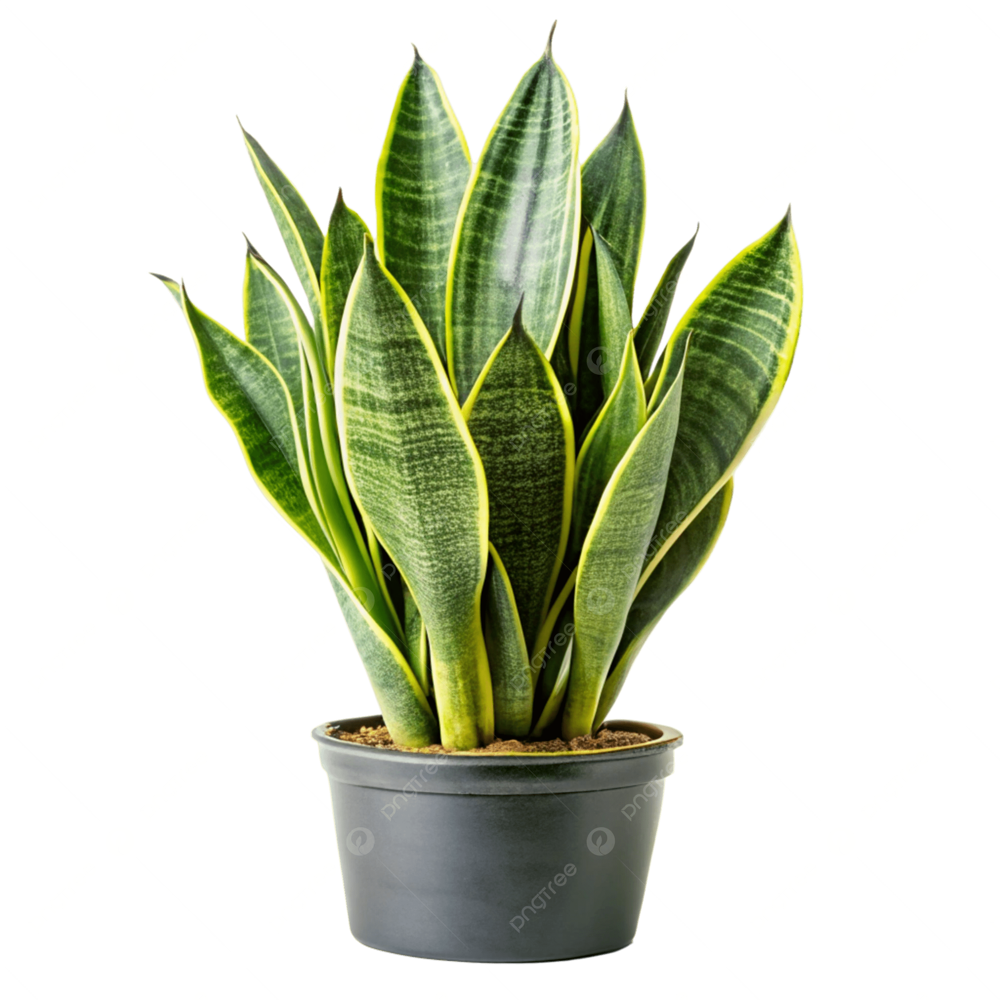

База рослин
Тут зібрана інформація про популярні кімнатні та садові рослини: вимоги до світла, поливу, грунту і поради по догляду.
Пошук по базі
Приклади карток рослин
-
Фікус Бенджаміна
Потребує яскравого розсіяного світла, полив помірний, вологість середня.
Додати у календар догляду -
Сансевієрія (щучий хвіст)
Витривала рослина, терпить тінь та нерегулярний полив.
Додати у календар догляду